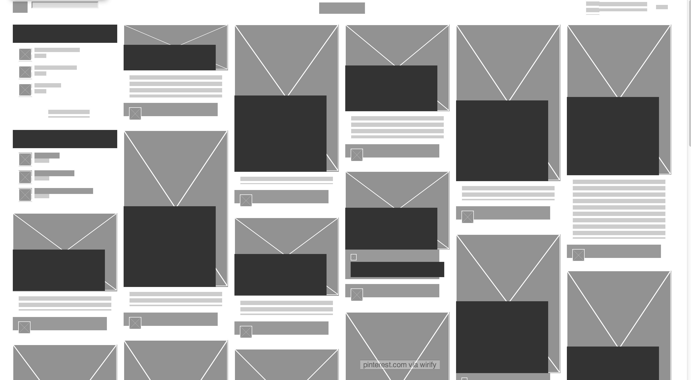
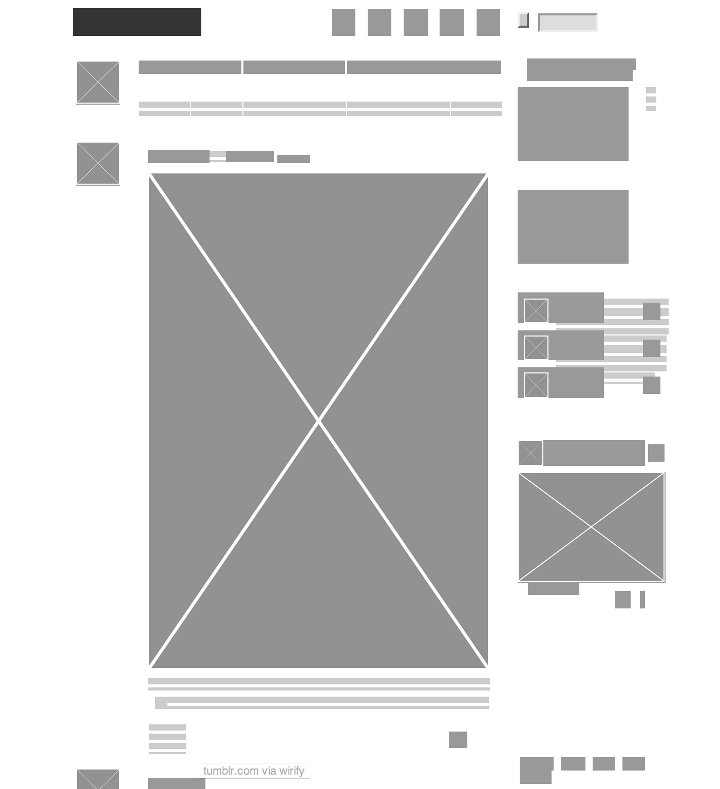
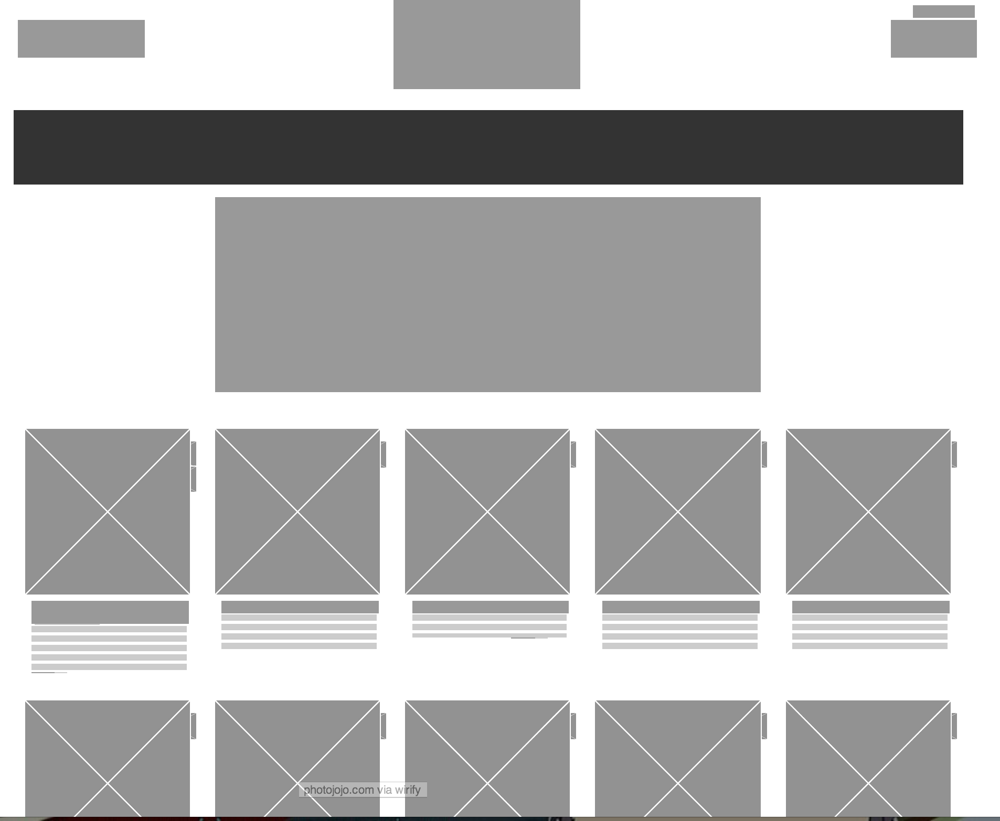

Pinterest allows you to create a virtual scrapbook of ideas using images and captions. There is a lack of a focal point on the page, but the grid-like structure is perfect for users to scroll through endless tidbits of information.

Tumblr provides a simple news feed of blogs, structured so there is an immediate focal point of the first images on the page. This provides the view with initial focus, and then allows for him to scroll down for endless posts. A handy sidebar allows for quick searching and easy access to links.

Photojojo is a blog and store for people who love cameras. It's main page is the storefront, which is structured like a grid allowing for browsing of products. Photographers can search using six popular social media photography tools via a very prominent box with links at the top of the page, which adds to the whimsy and fun of the page.
